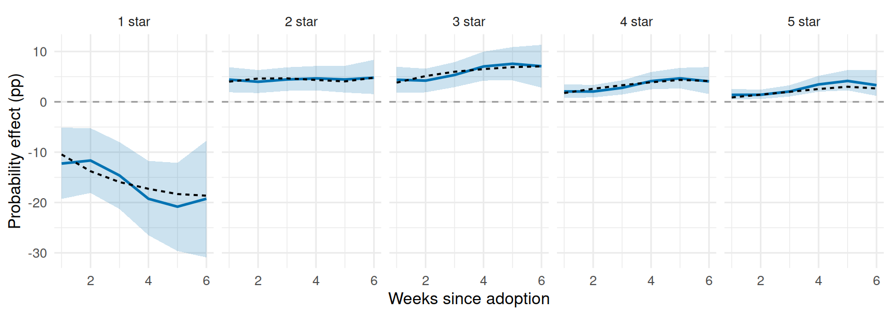

library(longbet)
library(dplyr)
library(tidyr)
library(tibble)
library(ggplot2)
library(purrr)
library(knitr)
source("R/longbet-common.R")
source("R/longbet-sim.R")
source("R/longbet-artifacts.R")
verify_longbet_environment()
theme_set(theme_minimal(base_size = 12))29 LongBet: Ordinal Outcomes and Customer Experience
NotePart of the LongBet sequence
This chapter is self-contained, but it assumes the panel model of LongBet: Dynamic Treatment Effects in Staggered Rollouts. The ordinal BART chapter introduces ordered outcomes in a cross-section; here calendar time and time since adoption are separate inputs.
29.1 A Rollout Can Improve More Than the Average Rating
A software company rolls out a new support workflow across customer accounts. Each account reports a weekly satisfaction rating from one to five stars. The product team wants to know three things: does the workflow create more enthusiastic customers, does it remove very poor experiences, and does the answer depend on how long the account has been on it.
An average rating compresses all three questions into one score. A five-star indicator answers the first and treats one and four stars alike. Ordinal LongBet models the whole ordered distribution, and then lets the team read off the category effects its decision actually turns on.
29.2 The Model: a Latent Response Seen Through Ordered Thresholds
Code the five ratings as \(Y_{it}\in\{0,\dots,4\}\), with 0 for one star. For account \(i\) in week \(t\),
\[ \begin{aligned} Y^*_{it} &= \eta_{it}+\epsilon_{it}, &\epsilon_{it}&\sim \mathcal N(0,1),\\ \eta_{it} &= \mu(X_i,t)+\beta_{S_{it}}\nu(X_i,t)\,\mathbf{1}\{S_{it}\ge 1\},\\ Y_{it}=k &\quad\Longleftrightarrow\quad \theta_k<Y^*_{it}\leq\theta_{k+1}. \end{aligned} \]
Everything from the first chapter carries over: \(\mu\) is the prognostic forest, \(\beta_S\) the shared trajectory over exposure, \(\nu\) the treatment forest that scales it by account. What is new is the observation model. The latent scale is a modelling device, not a satisfaction score, so the package fixes the residual variance at one and the first finite threshold at zero,
\[ \theta_0=-\infty,\qquad \theta_1=0<\theta_2<\cdots<\theta_{K-1},\qquad \theta_K=\infty, \]
and gives the remaining thresholds a proper ordered-normal prior. Thresholds and scale are shared across accounts, weeks and treatment status, which is what makes the category effects comparable.
Every draw becomes a set of probabilities
Compare adoption with never adopting at the same account profile and week. For draw \(d\), the two latent locations differ only by the treatment term, and the category probabilities and their effects are
\[ p^{a,(d)}_{itk}=\Phi\!\left(\theta^{(d)}_{k+1}-\eta^{a,(d)}_{it}\right)-\Phi\!\left(\theta^{(d)}_k-\eta^{a,(d)}_{it}\right), \qquad \Delta^{(d)}_{itk}=p^{1,(d)}_{itk}-p^{0,(d)}_{itk}. \]
The five category effects sum to zero: gains in some ratings must come from losses elsewhere. Do this arithmetic inside each draw and then summarise; transforming an averaged latent effect gives a different and wrong answer.
29.3 The Same Latent Shift Means Different Things at Different Starting Points
Before fitting anything, one property of the model is worth seeing on its own, because it changes which accounts a team should prioritise. Take the thresholds used below and two accounts with untreated latent locations of \(-0.6\) and \(0.5\), and give both the same \(+0.6\) latent improvement.
tibble(profile = c("Lower starting\nsatisfaction", "Higher starting\nsatisfaction"),
eta0 = c(-.6, .5)) %>%
mutate(eta1 = eta0 + .6,
`Fewer one-star ratings` = pnorm(-eta0) - pnorm(-eta1),
`More five-star ratings` = pnorm(eta1 - 2) - pnorm(eta0 - 2),
profile = factor(profile, levels = c("Lower starting\nsatisfaction", "Higher starting\nsatisfaction"))) %>%
pivot_longer(c(`Fewer one-star ratings`, `More five-star ratings`), names_to = "goal", values_to = "gain") %>%
ggplot(aes(profile, 100 * gain, fill = profile)) +
geom_col(width = .6, show.legend = FALSE) +
geom_text(aes(label = sprintf("%.1f pp", 100 * gain)), vjust = -.4, size = 3.5) +
facet_wrap(~ goal) +
scale_fill_manual(values = c("#0072B2", "#D55E00")) +
scale_y_continuous(limits = c(0, 26), expand = expansion(mult = c(0, .02))) +
labs(x = NULL, y = "Probability improvement (pp)")
A customer-success team trying to prevent bad experiences and a growth team trying to create advocates would rank these two accounts in opposite orders, from the same latent effect. A model that reports only a mean shift cannot make that distinction; one that reports category probabilities can.
29.4 The Rollout
Two hundred and forty accounts report weekly ratings for eight weeks. Adoption is randomized across weeks 3, 4 and 5, with a quarter of accounts never adopting. The workflow raises the latent response with a shape that saturates over exposure, and its size varies with one account characteristic. Five-star weeks are uncommon to begin with, which is the case where modelling the whole distribution earns its keep: a binary five-star indicator throws away everything the lower ratings say about the same latent shift.
od <- simulate_ordinal()
round(prop.table(table(od$y)), 3)
0 1 2 3 4
0.631 0.197 0.111 0.040 0.022 ord_run <- lb_artifact(
"ordinal_fit",
lb_key("ordinal", lb_budget(4), digest::digest(od[c("y", "x", "z")])),
export = "od",
builder = function() {
f <- do.call(longbet::longbet,
c(list(y = od$y, x = od$x, z = od$z, t = seq_len(od$tt), outcome = "ordinal",
num_categories = 5L, sig_knl = 1, lambda_knl = 2,
random_intercept = FALSE, random_seed = 391000L), lb_budget(4)))
p <- predict(f, x = od$x, z = od$z, t = seq_len(od$tt), summary_only = TRUE)
list(cat_att = att_probabilities(p), cutpoints = p$cutpoints_samples,
layout = chain_layout(f$model_params$num_chains, f$model_params$num_sweeps))
})
cat_att <- ord_run$cat_att
ord_layout <- ord_run$layoutoutcome = "ordinal" and num_categories = 5L are the only changes from a continuous fit. The ratings must arrive as integer codes \(0,\dots,K-1\); the package refuses factors, because the codes carry the order. This panel has no persistent account effect by construction, so the unit intercept is off here; a real rating panel usually wants it on.
att_probabilities() returns, for each exposure and category, the average probability effect over the treated cells at that exposure, as draws.
Sn <- dim(cat_att$att_full)[1]; K <- dim(cat_att$att_full)[2]
cat_flat <- t(matrix(aperm(cat_att$att_full, c(3, 1, 2)), ncol = Sn * K))
p_cat <- function(eta) sapply(seq_len(K), function(k) pnorm(od$cuts[k + 1] - eta) - pnorm(od$cuts[k] - eta))
cat_truth <- t(sapply(seq_len(Sn), function(s) {
m <- od$S == s
colMeans(p_cat(od$eta0[m] + od$tau[m]) - p_cat(od$eta0[m]))
}))
ord_diag <- bind_rows(
diagnose_draws(cat_flat, ord_layout,
sprintf("%d category effects (%d exposures x %d categories)", Sn * K, Sn, K))$summary,
diagnose_draws(t(ord_run$cutpoints), ord_layout, "Free thresholds")$summary)
kable(ord_diag %>% select(-ok), digits = 3,
caption = "Sampling checks on every category-probability effect and on the thresholds.")| Quantity | R-hat (max) | Bulk ESS (min) | Tail ESS (min) | Passed |
|---|---|---|---|---|
| 30 category effects (6 exposures x 5 categories) | 1.004 | 1094.077 | 1892.260 | 30 of 30 |
| Free thresholds | 1.003 | 833.622 | 1809.966 | 3 of 3 |
map_dfr(seq_len(K), function(k) {
tibble(exposure = seq_len(Sn), category = paste(k, "star"), estimate = cat_att$att[, k],
lower = cat_att$intervals[1, , k], upper = cat_att$intervals[2, , k], truth = cat_truth[, k])
}) %>%
ggplot(aes(exposure)) +
geom_ribbon(aes(ymin = 100 * lower, ymax = 100 * upper), fill = PAL[["LongBet"]], alpha = 0.2) +
geom_line(aes(y = 100 * estimate), colour = PAL[["LongBet"]], linewidth = 0.9) +
geom_line(aes(y = 100 * truth), colour = "black", linewidth = 0.7, linetype = "22") +
geom_hline(yintercept = 0, colour = "grey60", linetype = "dashed") +
facet_wrap(~ category, nrow = 1) +
labs(x = "Weeks since adoption", y = "Probability effect (pp)")
The workflow moves accounts off one star and spreads them upward, and the movement grows with exposure before levelling off. A mean-rating model would have compressed that picture into a single number per week; a five-star indicator would have reported the smallest of these five panels and discarded the largest.
29.5 From Category Effects to a Rollout Decision
There are two probabilities in this analysis and they should never be confused. The outcome probability is how likely a five-star rating is under a given history. The posterior decision probability is how probable it is, given the data and the model, that the effect meets the team’s target. Frequentist ordinal regression estimates the first perfectly well. The second is what a posterior gives you.
Suppose the team requires at least a 2-point increase in five-star probability and at least a 15-point reduction in one-star probability at four weeks of exposure. Both conditions are checked inside the same draw; multiplying two marginal probabilities would assume away their dependence, and these two are strongly dependent because the five category effects sum to zero.
top_draws <- cat_att$att_full[4, 5, ]
low_draws <- cat_att$att_full[4, 1, ]
passes <- top_draws >= 0.02 & low_draws <= -0.15
probability_meets_targets <- mean(passes)
event_diag <- diagnose_draws(rbind(top_draws, low_draws, 1.0 * passes), ord_layout,
"Five-star effect, one-star effect, and the joint event at S = 4")$summary
kable(event_diag %>% select(-ok), digits = 3,
caption = "Checks on the two category effects and on the decision event itself.")| Quantity | R-hat (max) | Bulk ESS (min) | Tail ESS (min) | Passed |
|---|---|---|---|---|
| Five-star effect, one-star effect, and the joint event at S = 4 | 1.003 | 1374.838 | 2269.033 | 3 of 3 |
The posterior probability of meeting both targets is 86.3%, against true effects at four weeks of +2.5 points on five stars and -17.3 points on one star. That single number is the deliverable: it is what a launch review can act on, it carries the dependence between the two conditions, and it is available for any subgroup or any pair of thresholds without refitting.
For a segment, average each account’s probability contrasts within a draw first, then apply the same rule. The order matters: averaging probabilities across accounts and then thresholding answers a different question from thresholding within a draw and then averaging.
A minimal recipe
library(longbet)
fit <- longbet(
y = ratings, x = x, z = z, t = seq_len(ncol(ratings)),
outcome = "ordinal", num_categories = 5L,
num_chains = 4L, num_burnin = 2000L, num_sweeps = 1000L, n_skip = 4L,
random_intercept = TRUE, random_seed = 391000L)
pred <- predict(fit, x = x, z = z, t = seq_len(ncol(ratings)), summary_only = TRUE)
cat_att <- att_probabilities(pred) # [exposure, category, draw]
five_star <- cat_att$att_full[, 5, ] # draws of the five-star effect by exposure
mean(five_star[4, ] >= 0.02) # posterior probability of hitting a targetatt_expected_score() is the companion when the business reports a weighted score rather than category probabilities: it forms the weighted category effects inside each draw, so the uncertainty is right even though the weights are a reporting convention.
29.6 When to Reach for the Ordinal Model
Use it when the outcome is an ordered rating and the decision distinguishes between the levels: removing one-star weeks, creating five-star weeks, or moving a net-promoter bucket. It keeps the information in the middle categories, which a binary indicator throws away, and it returns the whole distribution so that different teams can read the effect their own decision needs from a single fit.
The next chapter turns to a different complication: rollouts where you cannot switch the treatment on at all, only invite people to adopt it.